The Nexus '28 guide
Everything Nexus can do, one step at a time, with pictures. Read it top to bottom, jump around with the list on the left, or search for what you need.
Mac or Windows? This guide writes Mac keys. On Windows, use Ctrl where you see ⌘, and Alt where you see ⌥. Where something only works on one of them, it says so.
Quick help inside the app: click the ? button at the top of the Nexus window, or just ask any agent "how do I …?". They know this guide and can open the right page for you.
Getting started
Nexus '28 is an assistant that lives on your Mac or Windows PC. You can type or talk to it from anywhere, it can look at your screen when you ask, help with school and work, make flashcards and quizzes, run jobs in the background, and use your other apps through connectors. N28C is the same Nexus on your phone.
Install on a Mac
- Go to the download page and download the .dmg file. It works on Macs with Apple silicon (M1 or newer) and macOS 13 or later.
- Open the .dmg and drag Nexus '28 into Applications.
- Open Nexus '28 from Applications. Because it isn't from the App Store yet, macOS may say it "can't be opened" or "is damaged". It isn't. Fix it one of two ways:
- Open System Settings → Privacy & Security, scroll down and click Open Anyway. Or
- Open the Terminal app, paste this and press Return:
xattr -cr "/Applications/Nexus '28.app"
- Nexus shows up in your menu bar (top right of the screen). Press ⌘⇧N any time to open it.
Install on Windows
- Download Nexus-28-Setup-….exe from the download page. It works on Windows 10 and 11.
- Open it. If Windows says "Windows protected your PC", click More info, then Run anyway.
- Nexus opens and then lives in the system tray, next to the clock (you may need to click the little ^ arrow to see it). Press CtrlShiftN to open it.
Nexus checks for updates by itself and tells you when one is ready. On Windows, if an update ever gets stuck, Settings → General → Updates has a button to download it yourself.
The first time you open it
- A short tour points out the important buttons. You can skip it and take it again later from the ? button → Take the tour.
- Make an account or sign in (bottom left, "Sign in to Nexus"). You don't need one to start chatting, but an account lets you use the phone app, sync chats between computers, save points and redeem plans. It's the same account as Test Run and N28C.
- Start typing. Flash, Lyte and Neodela work right away on the free Nexus key, with no setup.
The Nexus window
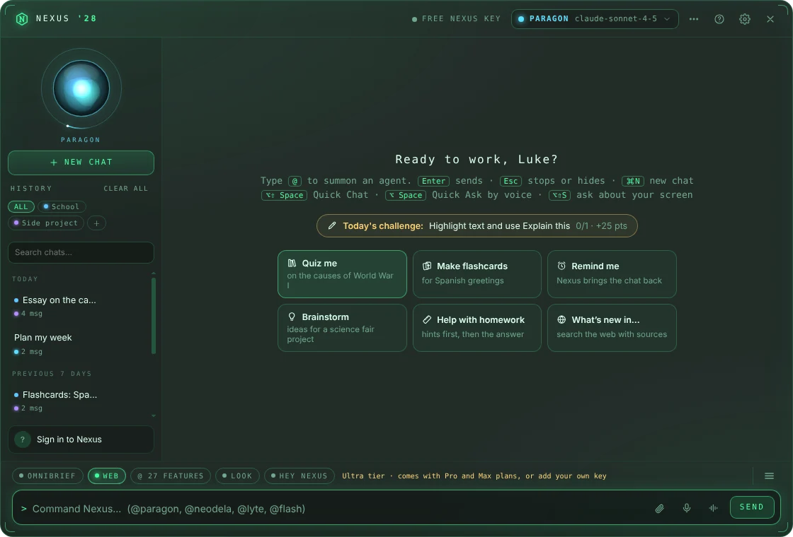
- Left side
- The orb shows which agent you're talking to (it moves when Nexus is listening or talking). Below it: New chat, your Spaces (folders), the chat search with the Map button, and your chat history. At the bottom is your account.
- Top bar
- FREE NEXUS KEY (or the key in use), the agent picker (click to switch agents and models), ⋯ (this chat's menu), ? (help), the gear (Settings) and ✕ (hide the window; Nexus keeps running).
- Middle
- The chat. In a new chat you see a greeting, today's challenge, and starter cards.
- Above the box
- Quick switches: OmniBrief (short answers), Web (let agents search the web), @ features, Look (let it see your screen with your next message) and Hey Nexus. The ☰ button on the right opens Missions, Huddle, Debate, Watch, Write, Meeting notes, Routines, Focus, Study, the Inbox, Weekly goals and Reminders.
- The box
- Type here and press Enter. ⇧Enter makes a new line. The buttons on the right: attach (paperclip), dictate (microphone), voice note (sound wave) and Send.
Press Esc to stop an answer that's coming in, or to hide the window when nothing is happening.
Agents and the free key
Nexus has a crew of agents. Each one is good at something different. Pick one with the agent picker at the top, or type @ and its name at the start of a message (like @neodela explain black holes).
| Agent | Best for | On the free Nexus key |
|---|---|---|
| Flash | Fast, short answers and everyday questions. | Unlimited |
| Lyte | Quick but more careful: writing, ideas, explanations. | A set number of chats |
| Neodela | Deep thinking: hard homework, long explanations, planning. | Fewer chats than Lyte |
| Paragon | The agent: it can use tools, open apps, search the web, read pages, read your calendar, use connectors and take actions (it always asks first before changing anything). | Comes with Pro (10 tasks a day) and Max (25 a day) plans, or use your own key |
| Axiom | The Apex tier for the hardest problems. Only for people the Apoji Team allows. | No |
The little ring next to an agent shows how many free chats it has left. When one runs out, switch to Flash (always unlimited), add your own key, or redeem a plan.
Using your own API key
Your own key means no limits and your choice of model. Open Settings → Models & keys, pick a provider (OpenAI, Claude, Gemini, OpenRouter, Groq and more), paste the key, then pick which model each agent uses in Settings → Agents. Keys are kept on your computer only.
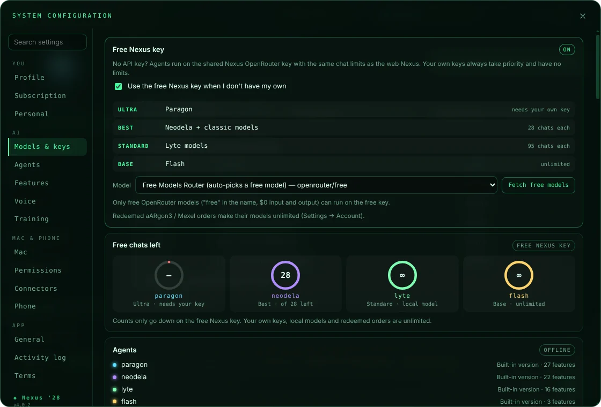
Models on your own computer
If you install Ollama or LM Studio (or have a Mac with macOS 26, which has Apple's on-device model), Nexus can run agents with no internet at all. Choose it in Settings → Agents, or let Nexus switch to it by itself when you go offline (see Offline).
For aARgon3 staff
If you're on the aARgon3 staff list (and signed in to Nexus with the same email), you get the free tier like a Pro plan: Lyte and Neodela with no limits, and 10 Paragon tasks a day.
Chatting
Pick an agent or a feature with @
Type @ in the box and a menu pops up with the agents and the @features the current agent can use. Use the arrow keys and Enter, or keep typing to filter.
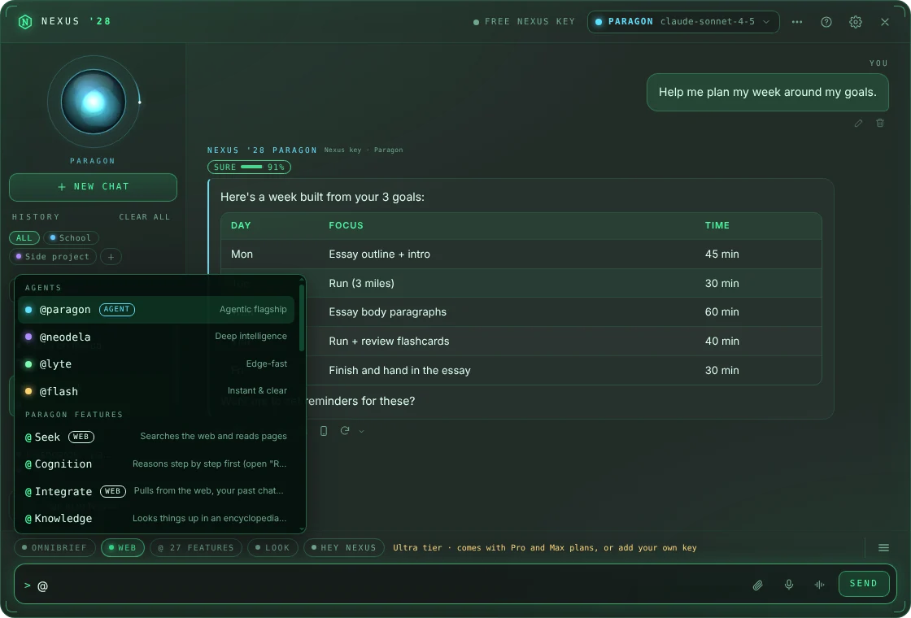
Features change how the answer is made. A few favorites:
| Feature | What it does |
|---|---|
| @Seek | Researches the web and gives sources. |
| @StudyMode | Teaches you a topic, then quizzes you. |
| @Homework | Hints first, then the answer, so you actually learn it. |
| @Magyk | Learn a topic fast, with flip flashcards. |
| @Cite | Citations in MLA, APA or Chicago. |
| @Cognition | Thinks step by step before answering. |
| @Synergy | Brainstorms ideas with you. |
| @ClarityLens | Makes something complicated simple. |
| @OmniBrief | A short, high-impact answer. |
| @Echo | Uses what you talked about in past chats. |
| @NexusForge | Builds a step-by-step plan or workflow. |
| @CodeComplex | Advanced coding help. |
Settings → Features lists every feature, lets you switch them on or off, and lets you make your own.
Attach files, pictures and other chats
- Drag files or pictures onto the window, paste a picture, or click the paperclip.
- Nexus reads PDFs, documents, text and code files, and looks at pictures.
- To bring in another chat, type [[ and pick it. Pin it (the pin on its chip) to keep it with every message.
- Look (above the box) attaches a picture of the window you were just using, so you can ask "what's wrong here?".
Voice notes
Don't feel like typing? Click the sound-wave button next to the microphone and talk for up to 5 minutes. Click Done, and the note is added to your message. Nexus hears what you said (it's written out for the agent), and you can play it back from the chip. Press Send when you're ready.
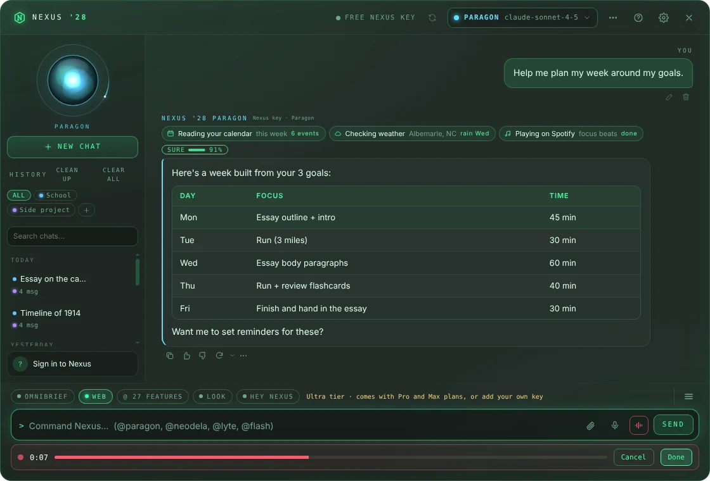
The microphone button is different: it's dictation, which types your words into the box instead.
Starter cards
A new chat shows six ideas (they change each day). Click one to run it right away. Cards that need you to finish the sentence (like "Improve my writing") put the start in the box for you to complete.
What you can do with an answer
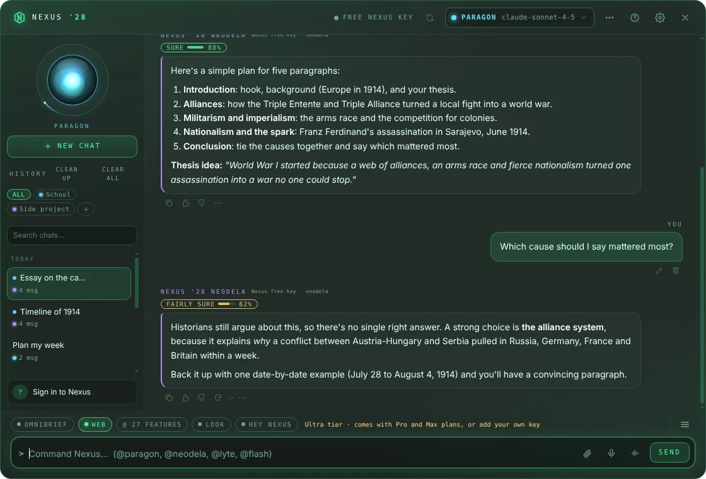
| Button | What it does |
|---|---|
| 📌 Pin | Pins the message to the top of the chat so you can jump back to it. |
| ▯▯ Compare | Asks another agent the same question and shows both answers side by side. Click Keep this one on the better answer. |
| ↳ Branch | Starts a new chat with everything up to here, to try a different direction. |
| 🔊 Read | Reads the answer out loud, with words highlighted as they're read. |
| ⧉ Copy | Copies the answer. |
| ↻ Redo | Makes a new answer (pick another agent from the little arrow). Use ‹ › to flip between versions. |
| ✎ Edit | On your own messages: change what you asked and ask again. |
The confidence meter
Each answer can show how sure the agent says it is: SURE (80% and up), FAIRLY SURE (55 to 79%) or NOT SURE (under 55%). It's the agent's own estimate, so double-check anything important, especially when it's low. Turn it off in Settings → General → Accessibility ("Show how sure each answer is").
Interactive answers
Some answers come alive: quizzes you can take, flashcards you flip, checklists you tick, tables and charts. Your progress is saved with the chat.
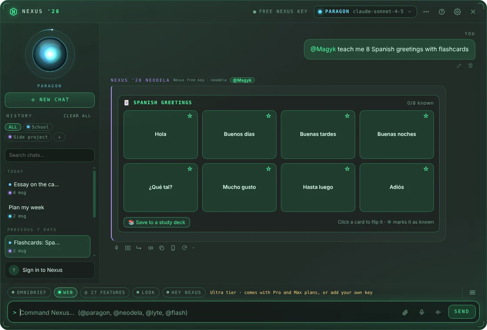
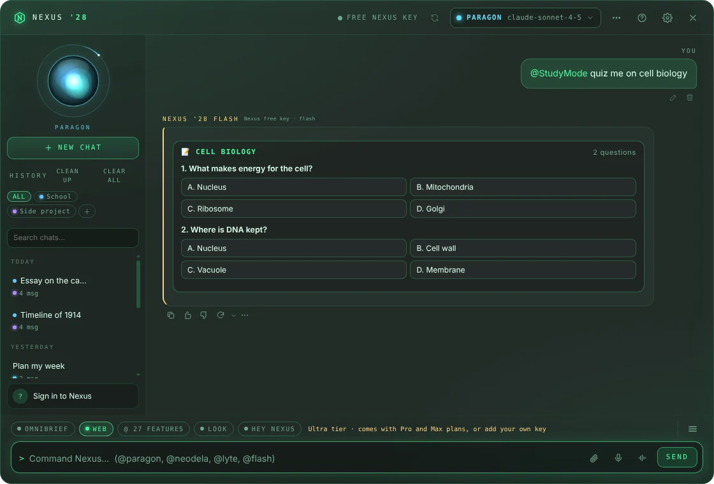
Chat tools
The ⋯ button at the top opens the menu for the chat you're in.
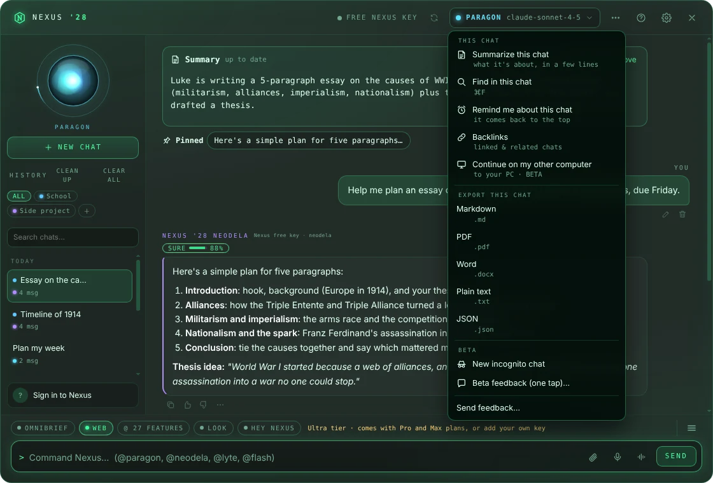
Summarize a chat
⋯ → Summarize this chat. A short summary appears at the top of the chat. It says when there are newer messages, and you can click Update or Remove.
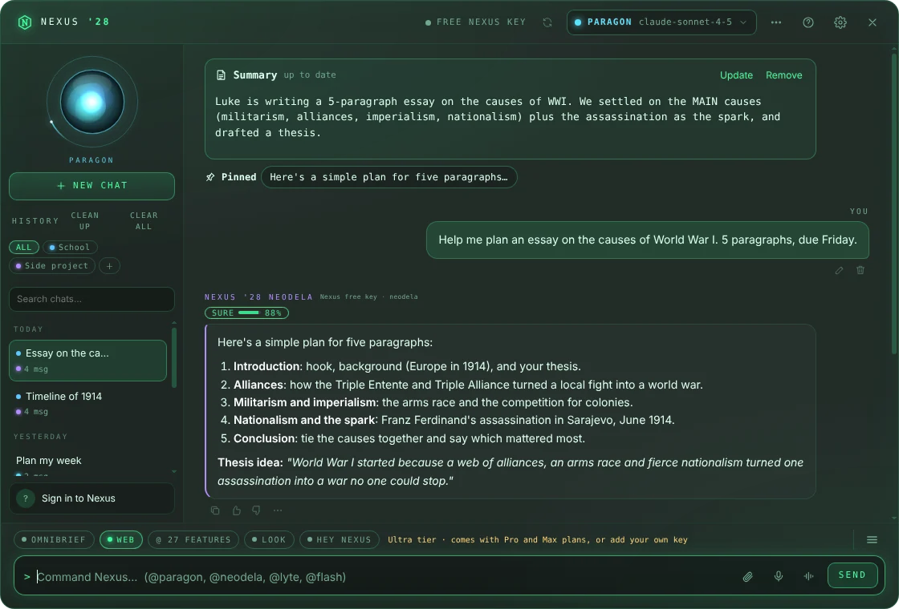
Find in this chat (⌘F)
Press ⌘F (or ⋯ → Find in this chat). Type a word and every match lights up. Enter goes to the next one, ⇧Enter to the one before, Esc closes it.
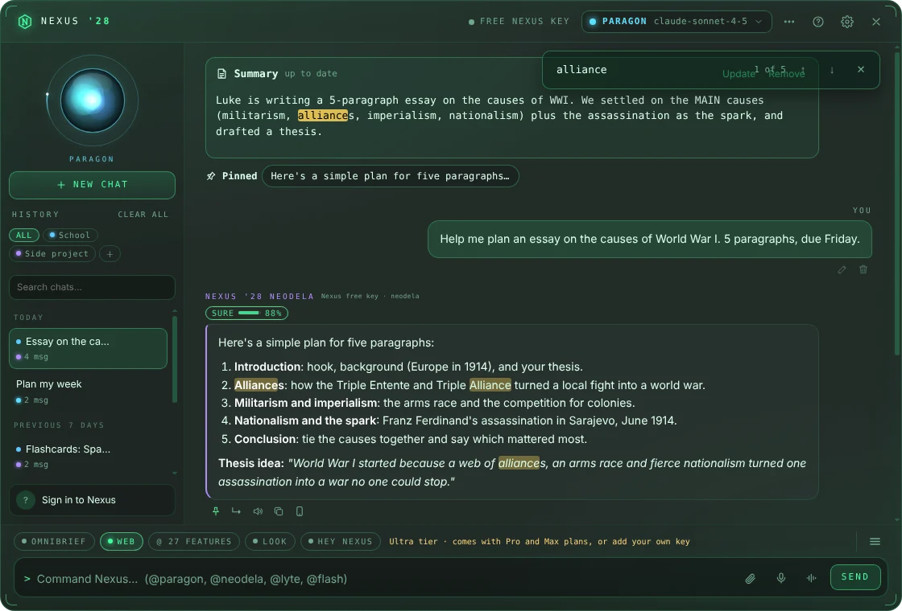
Reminders from chat
Say it like you'd say it to a person, in any chat:
- remind me about this tomorrow at 9
- remind me to call Sam in 2 hours
- remind me that the essay is due Friday at 3pm
Nexus sets it right away (no AI needed, so it's instant). When it's time, the chat jumps to the top with a notification, on your phone too if N28C is set up. You can also use ⋯ → Remind me about this chat, and see or cancel every reminder in ☰ → Reminders.
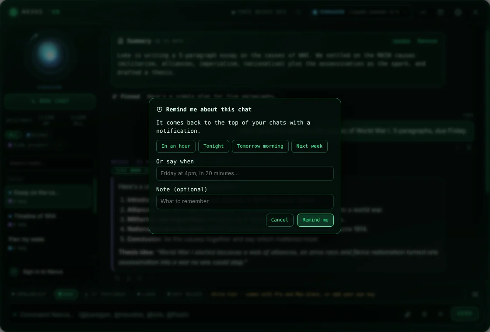
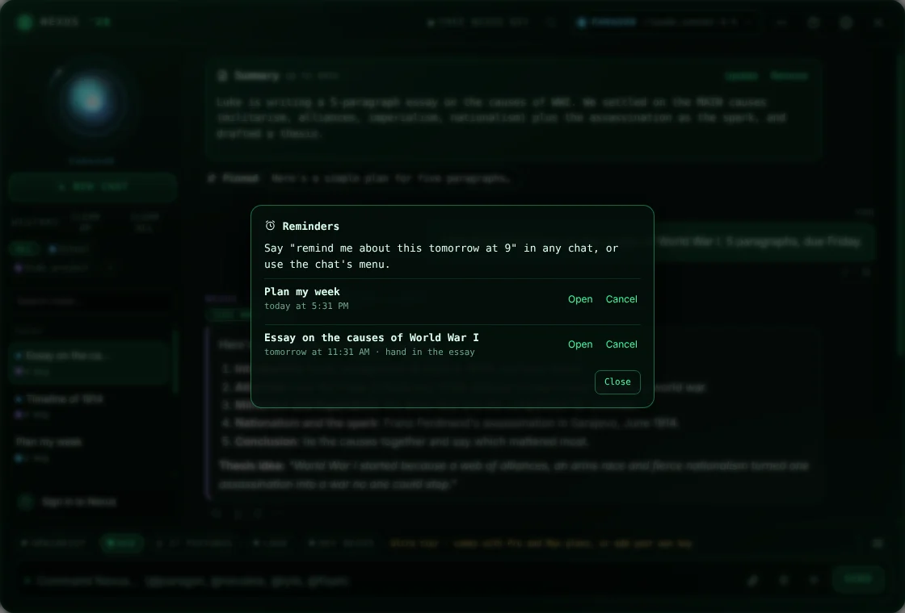
More things in the chat menu
- Backlinks: chats that link to this one, and chats about similar things.
- Export: save the chat as Markdown, PDF or Word.
- Incognito: a chat that's never saved, never used for memory and never synced.
- Hover a chat in the list to pin it (📌) or delete it (✕). Drag a chat onto a Space to move it there. Double-click a Space to rename or recolor it.
Spaces, search and the mind map
Spaces
Spaces are folders for chats. Click + next to the Space chips (left side) to make one, then drag chats into it, or start a chat while a Space is selected. A Space can have its own default agent, and Nexus can sort new chats into Spaces for you (Settings → Personal).
Projects are Spaces that share files and notes with every chat inside them, so you don't have to attach the same document over and over.
Search
The search box above your chats looks through titles and what was said. The ⌘K palette searches everything: chats, settings, actions, clipboard history and files.
The mind map
Click Map next to the chat search to see all your chats as a tree (grouped by Space and topic) or as a graph of how they connect. Click a chat to open it.
Sync and moving computers
- Settings → Account → Sync chats between my computers: your chats and Spaces show up on every Mac and PC you sign in to.
- Settings → General → Move to another computer: bring everything (chats, decks, memory, settings, and optionally your keys, locked with a passcode) to a new computer, through your account or a file.
Memory and rules
Memory you control
Nexus only remembers what you tell it to. Say "remember that I'm in 11th grade" in any chat, or click Remember on a card an agent offers. See, edit or delete everything in Settings → Personal → Memory.
Memory per Space
In a chat that's inside a Space, "remember that …" saves the fact to that Space only, so only its chats know it (handy for "my teacher wants MLA citations" in your School Space). To save something for every chat, say "remember everywhere that …". In Settings → Personal → Memory, each fact has a menu to change which chats know it.
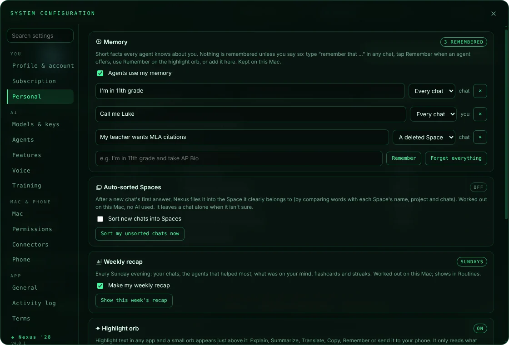
Your own rules
Settings → Training → Your rules: instructions every agent follows, like "always answer in Spanish" or "keep answers under 100 words". They go along with every message.
What Nexus learned
If you choose to share chats for training (Settings → Training, off unless you turn it on, with personal details removed), the Apoji Team reviews lessons from them. "What Nexus learned" shows each batch of lessons that reached the app, and the ones being tried right now.
Voice
"Hey Nexus"
- Open Settings → Voice and turn on Hey Nexus (or click the HEY NEXUS chip above the box).
- Say "Hey Nexus", pause a moment, then ask. Quick Ask opens and answers out loud.
- Turn on conversation mode to keep talking back and forth without saying "Hey Nexus" each time.
Is it hearing you? Settings → Voice shows a confidence meter: the last few things it heard and how sure it was. On Windows there's a line showing where it wakes. Low bars mean speak a little louder, slower, or closer to the microphone.
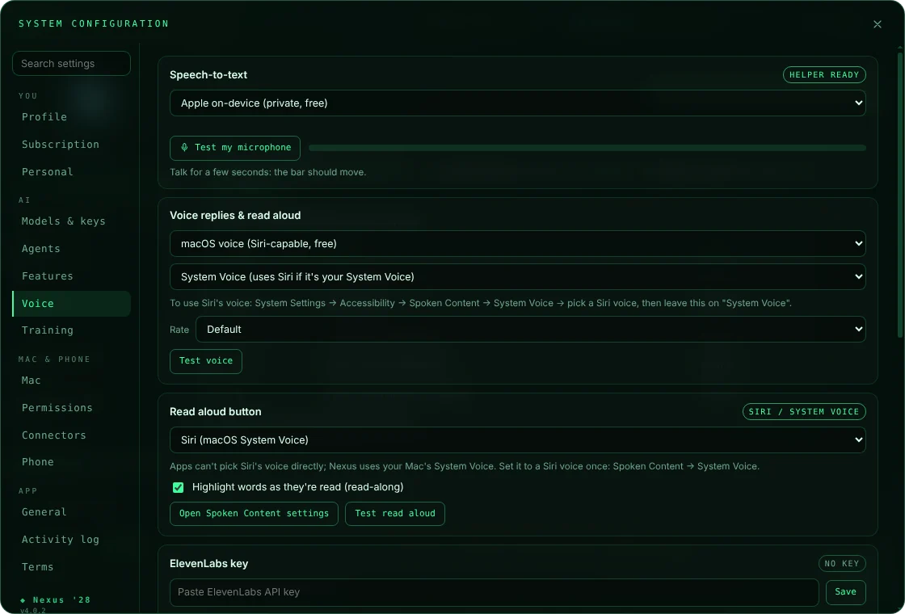
Voices and speech
- Speech-to-text: Nexus speech (free with your account, with a daily allowance), your computer's own, or your OpenAI, Groq or ElevenLabs key.
- Read-aloud voice: your computer's voice, or OpenAI / ElevenLabs voices. Each agent can have its own voice.
Nexus anywhere on your computer
| What | How | What it's for |
|---|---|---|
| Quick Ask | ⌥Space, or "Hey Nexus" | Ask one thing by voice, from any app. |
| Quick Chat | ⌥⇧Space | A small chat bar that stays on top. Drag it anywhere by its top edge; pick any chat from its menu. |
| Ask about my screen | ⌥⇧S | Takes a picture of the window you're in and opens Quick Chat about it. |
| Explain this | Highlight text, then ⌥⇧E | Explains the text you highlighted. |
| Highlight orb | Highlight text in any app | A small orb appears: explain, summarize, translate or ask about the text. |
| Watch | ☰ → Watch | Get told when something happens in a window (a download finishing, a message arriving). |
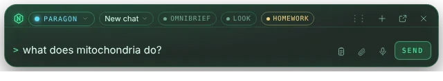
App actions: Paragon can open apps, set timers, change the volume, turn on dark mode, control music, find files and more (Settings → Mac / PC). It always asks before doing something you'd want to approve.
Watch & guide me
Stuck in an app you don't know? Nexus can watch your screen and tell you exactly what to click next, one step at a time, out loud.
- Click the ? button at the top of the Nexus window and choose Watch & guide me.
- Type what you want to do, like "add a printer in Windows Settings" or "share a Google Doc with my teacher", and click Start guiding.
- The Nexus window hides and a small box appears at the top right of your screen. Every few seconds Nexus looks at your screen and tells you the next step.
- Do the step. Click I did it to go on right away, or I'm stuck if you can't find it. 🔊 turns reading aloud on or off, and Stop ends it.
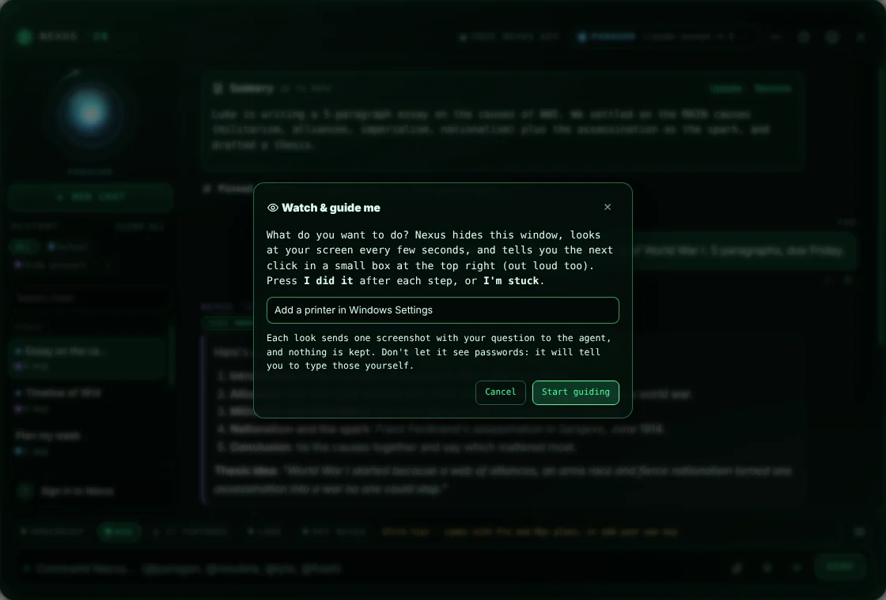
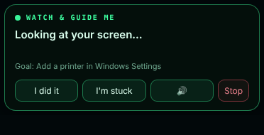
Each look sends one screenshot with your question to the agent, and nothing is kept. The guide box hides itself from the screenshots. It never asks for passwords or codes: when a step needs one, it tells you to type it yourself. On a Mac, Nexus needs Screen Recording permission (Settings → Permissions).
Goals, reminders and focus
Weekly goals
☰ → Weekly goals: a short list for this week. Every agent knows it, so "plan my week" or "what should I do next?" use your goals. You can also add one by saying "my goal this week is to finish the essay" in any chat. Tick goals off as you go. On Monday the list starts fresh, with a button to bring last week's unfinished goals along.
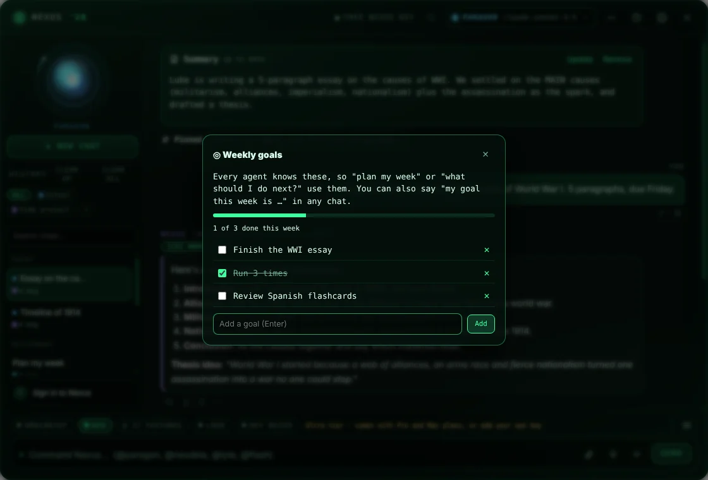
Focus timer
The Focus button (next to ☰) starts a block of work. Nexus holds notifications while it runs and you earn points.
Routines and the Morning Brief
☰ → Routines: run a prompt on a schedule (like a Morning Brief of your day, or an evening wrap-up), or when something happens (an app opens, you plug in headphones). Routines run while Nexus is open.
Daily challenges and points
Each day there's a small challenge in a new chat ("Highlight text and use Explain this"). Finish it for bonus points; it disappears from the new-chat screen once it's done. Points unlock orb skins (Settings → Stats).
Study
- Make a deck: ask "make flashcards about cell biology", click Save to a study deck on flashcards in any chat, or right-click a branch of the mind map.
- Review: ☰ → Study. Nexus shows the cards that are due (spaced review: cards you know come back less often). Grade each one Again, Hard, Good or Easy.
- Quizzes and study plans: ask for a quiz on a deck, or "make me a study plan for my test on Friday".
- On your phone: decks and reviews are in N28C's Study tab, with reminders when cards are due.
Missions, Huddle, Debate and more
All of these are in the ☰ menu above the box.
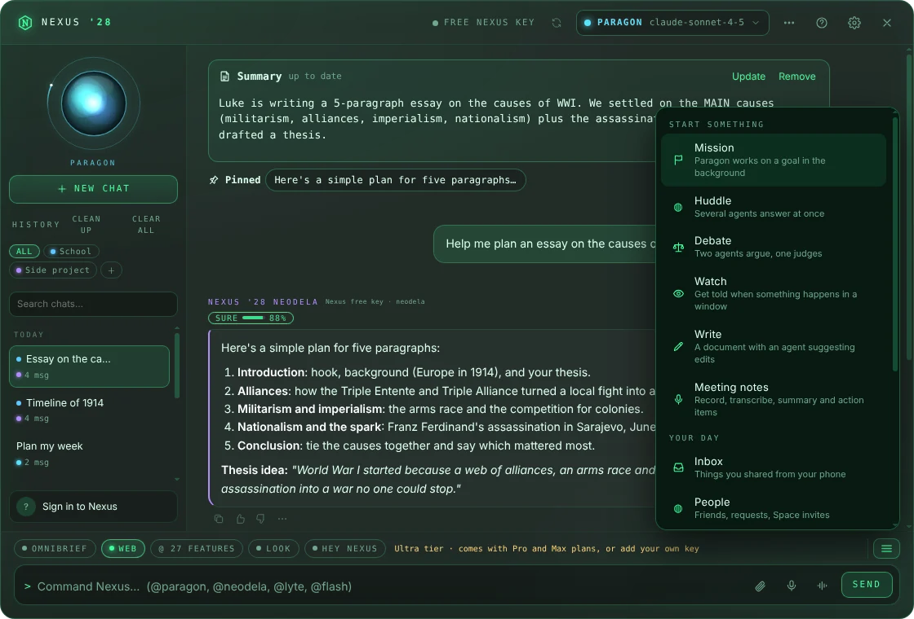
- Mission
- Give Paragon a goal ("plan a 3-day trip to Tokyo") and it works on it in the background, step by step, then writes up what it did. Pick a template to fill in the blanks.
- Huddle
- Several agents answer the same question at once, then one sums up.
- Debate
- Two agents argue opposite sides, and a third judges.
- Watch
- Keep an eye on a window and get told when something changes.
- Write
- A document editor with an agent suggesting edits next to you.
- Meeting notes
- Records a meeting, writes it out, and makes a summary and action items.
- Inbox
- Things you shared from your phone (see Share to Nexus).
Your phone: N28C
N28C is Nexus on your phone. It talks to the Nexus on your computer, so your chats, agents, study decks and stats are the same.
- On your computer, open Settings → Phone. Make sure you're signed in.
- Scan the QR code with your phone's camera. N28C opens in the browser.
- Add it to your home screen: on iPhone, tap Share → Add to Home Screen; on Android, tap ⋮ → Install app.
- Allow notifications when asked, so reminders, study and finished missions reach your phone.
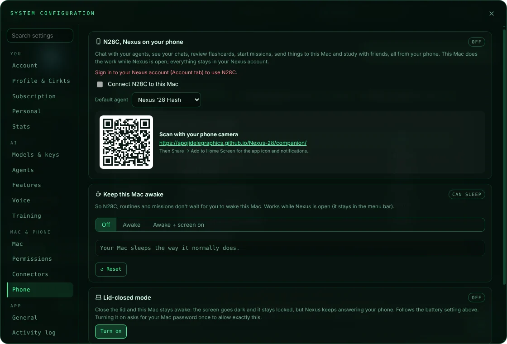
Test Run (Nexus in a browser)
Test Run is a smaller Nexus that works in any browser, including Chromebooks: Flash, Lyte and Neodela with their @features, web search, quizzes and flashcards.
- Try it as a guest: no account needed. You get 8 answers a day, and your chats stay in that browser and are cleared every day. When you make a free account from the guest bar, today's chats come with you.
- With an account: chats are saved to your account, with a bigger daily allowance. Add your own ChatGPT, Claude, Gemini, OpenRouter or DeepSeek key for unlimited answers.
- Move a chat to the app: in Test Run, open a chat's ⋯ menu and choose Open in the app (on a computer with Nexus installed and signed in to the same account). Or in the app, go to Settings → Account → Chats from Test Run and bring them over.
Connectors, step by step
Connectors let Paragon use your other apps: read your Notion pages, look through GitHub, post in Slack, find places on Google Maps and more. They use something called MCP (Model Context Protocol), a standard way for AI apps to talk to other apps. You don't need to know how it works: follow the steps for the one you want.
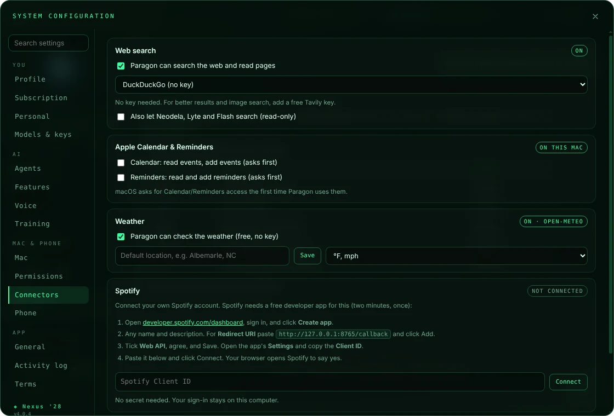
Before you start: two free helper programs
Most connectors are small programs that Nexus starts for you. They need one of two free helpers installed on your computer, once:
- Node.js (for connectors that say
npx): go to nodejs.org, download the LTS version, and install it like any app. Then restart Nexus. - uv (for connectors that say
uvx: Google Workspace and Web fetch). On a Mac, open Terminal and pastecurl -LsSf https://astral.sh/uv/install.sh | sh. On Windows, open PowerShell and pastepowershell -ExecutionPolicy ByPass -c "irm https://astral.sh/uv/install.ps1 | iex". Restart Nexus.
GitHub doesn't need either one.
Adding any connector
- Open Settings → Connectors and scroll to MCP connectors.
- Pick one from Add connector…. A card opens with what it needs.
- Paste the key or token into the empty field (the steps below show where to get each one). Keys are kept on your computer.
- Click Save. In a few seconds the badge turns green and shows how many tools it has. If it's red, read the message under it, or see connector problems.
- Ask Paragon to use it: "what's on my Notion page called Plans?", "list my open GitHub issues".
Anything that changes something (sending, posting, deleting, paying) always shows an approval card first. You can switch a connector off without deleting it.
Notion
Easiest. Lets Paragon read and write pages you choose.
- Go to notion.so/profile/integrations and click New integration.
- Give it a name (like "Nexus"), choose your workspace, keep the type Internal, and click Save.
- Click Show next to the Internal Integration Secret and copy it (it starts with
ntn_orsecret_). - In Nexus, Add connector… → Notion, paste it into NOTION_TOKEN, and Save.
- Important: in Notion, open each page you want Nexus to see, click ⋯ (top right) → Connections → add your integration. Pages inside it are included.
GitHub
Issues, pull requests, code and repos. No helper program needed.
- Go to github.com/settings/personal-access-tokens → Generate new token (fine-grained).
- Name it, pick an expiration, choose which repositories it can see, and give it the permissions you want (Issues and Pull requests: Read and write; Contents: Read is a good start).
- Click Generate token and copy it (it starts with
github_pat_). - In Nexus, Add connector… → GitHub. In the Authorization header, paste the token right after
Bearer(keep the space). Save.
Brave Search
Better web and local search. Needs Node.js.
- Go to brave.com/search/api, sign up, and choose the Free plan.
- Open API Keys in the dashboard and copy your key.
- In Nexus, Add connector… → Brave Search, paste it into BRAVE_API_KEY, Save.
Slack
Read channels, post and reply. Needs Node.js, and permission to add apps to your workspace.
- Go to api.slack.com/apps → Create New App → From scratch. Name it and pick your workspace.
- Open OAuth & Permissions. Under Bot Token Scopes, add:
channels:history,channels:read,chat:write,reactions:write,users:read. - Click Install to Workspace and allow it. Copy the Bot User OAuth Token (starts with
xoxb-). - Find your Team ID: open Slack in a browser; the address looks like
app.slack.com/client/T0123ABC/…. The part starting with T is it. - In Nexus, Add connector… → Slack, paste the token into SLACK_BOT_TOKEN and the Team ID into SLACK_TEAM_ID. Save.
- In Slack, invite the app to each channel it should read: type
/invite @YourAppNamein the channel.
Google Maps
Places, directions, distances. Needs Node.js and a Google Cloud account (Google asks for a card, but there's a free monthly amount).
- Go to console.cloud.google.com/google/maps-apis and create a project.
- Enable Places API, Directions API, Distance Matrix API and Geocoding API.
- Go to Keys & Credentials → Create credentials → API key, and copy it.
- In Nexus, Add connector… → Google Maps, paste it into GOOGLE_MAPS_API_KEY, Save.
Stripe
Customers, payments, invoices. Needs Node.js.
- In the Stripe dashboard → Developers → API keys, create a restricted key with only what you need (or use a test key,
sk_test_…, to try it safely). - In Nexus, Add connector… → Stripe, paste it into STRIPE_SECRET_KEY, Save.
Anything that moves money still asks you first. Never paste a live secret key you wouldn't want an assistant to use.
Files
Lets Paragon read and write files in folders you choose. Needs Node.js.
- Add connector… → Files. The arguments list the folders it may use; it starts with
~/Documents. - Change or add folders (one per argument), like
~/Desktop/School. Save.
Web fetch and Knowledge graph memory
Web fetch (needs uv) reads any web page as clean text. Knowledge graph memory (needs Node.js) is a private notebook of people, projects and how they connect, kept on your computer. Neither needs a key: add it and Save.
Gmail and Google Workspace
The hardest one. Google makes you create your own "app" first. Allow 15 minutes. You need Node.js (Gmail) or uv (Google Workspace).
- Go to console.cloud.google.com and create a project (top bar → project menu → New project).
- Search for and Enable the APIs you want: Gmail API, and for Workspace also Google Calendar API, Google Drive API, Google Docs API, Google Sheets API.
- Open Google Auth Platform (or OAuth consent screen) → Get started. App name "Nexus", your email, audience External. Under Audience → Test users, add your own Gmail address.
- Go to Clients (or Credentials) → Create client → type Desktop app → Create.
- Google Workspace connector: copy the Client ID and Client secret into GOOGLE_OAUTH_CLIENT_ID and GOOGLE_OAUTH_CLIENT_SECRET, put your Gmail address in USER_GOOGLE_EMAIL, and Save. The first time Paragon uses it, it shows a Google sign-in link: open it and allow access (Google warns the app isn't verified, because it's yours: click Continue).
- Gmail connector instead: download the client's JSON file, rename it to
gcp-oauth.keys.json, and put it in a folder named.gmail-mcpin your home folder. Then open Terminal (or PowerShell) and runnpx @gongrzhe/server-gmail-autoauth-mcp authonce, and sign in. Then Add connector… → Gmail → Save.
Supabase
For people with a Supabase project. Create a personal access token at supabase.com/dashboard/account/tokens, paste it into SUPABASE_ACCESS_TOKEN, and change --project-ref= to your project's reference. It starts read-only.
Any other MCP server
Choose Custom server. For a program, enter its command and arguments (from the server's instructions) and any keys under environment variables. For a hosted server, switch the type to HTTP and paste its URL (plus a header if it needs a token).
Connector problems
| It says | Try this |
|---|---|
| "npx" or "uvx" not found | Install Node.js or uv (see above), then quit and reopen Nexus. |
| 401, unauthorized, invalid token | The key was pasted wrong or has expired. Make a new one and paste it again, with no extra spaces. |
| Connected, but it can't find my pages / channels | Share the page with the integration (Notion) or invite the app to the channel (Slack). |
| Stuck on "connecting" | The first start downloads the connector; give it a minute. Switch it off and on to retry. |
Every Settings page
Click the gear (or press ⌘,). The search box at the top left finds any setting by name.
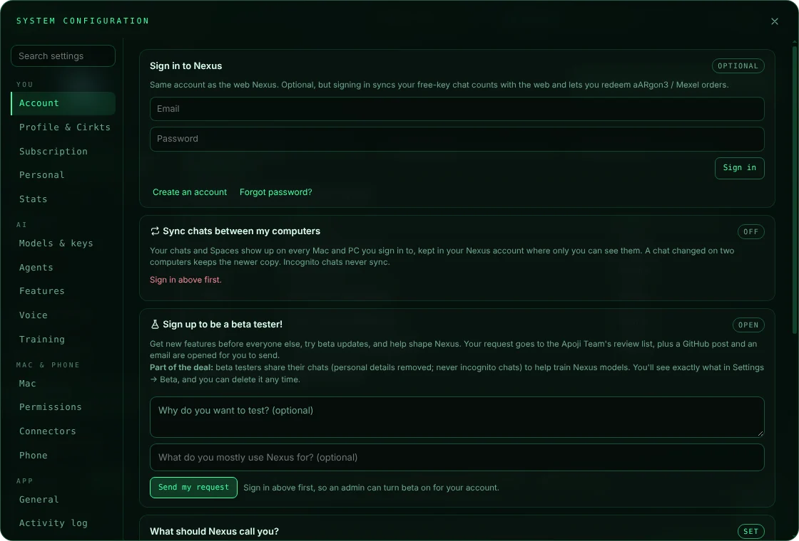
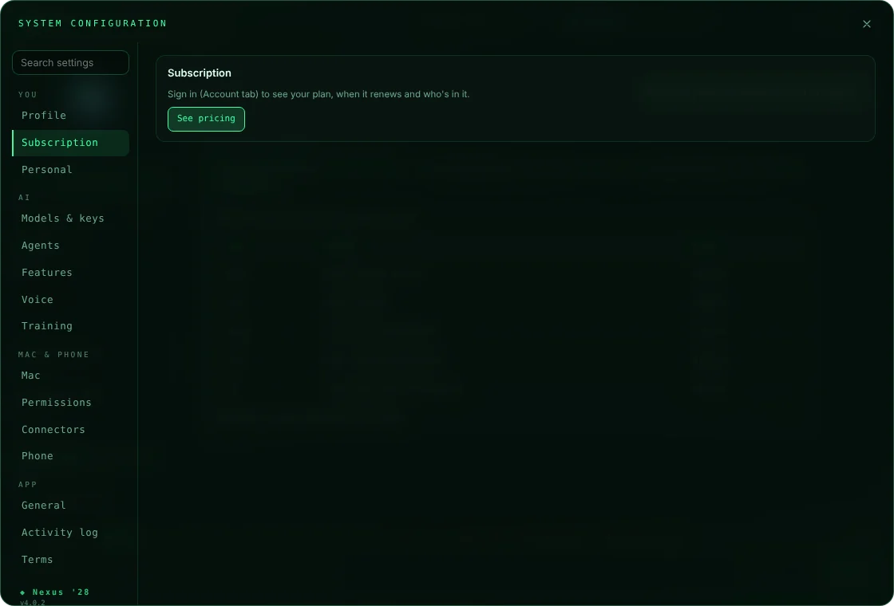
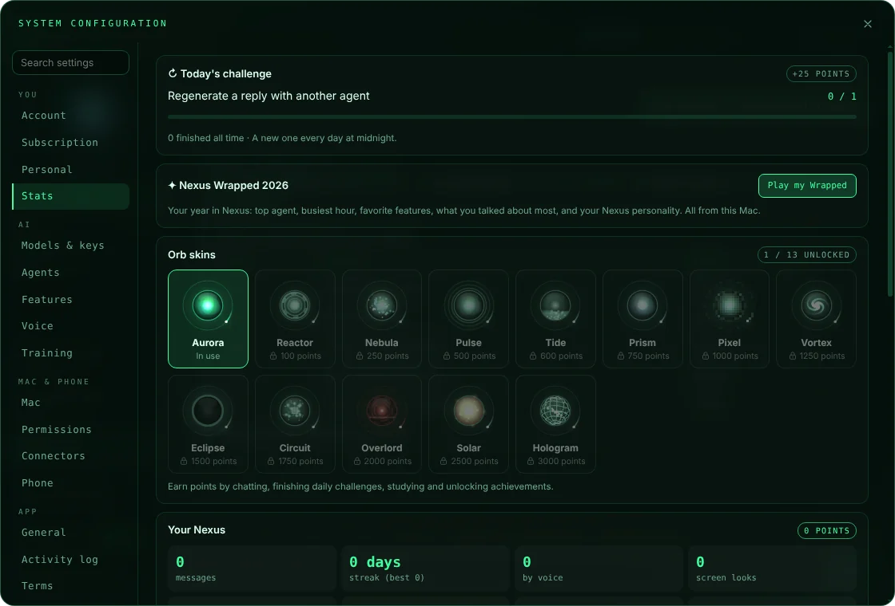
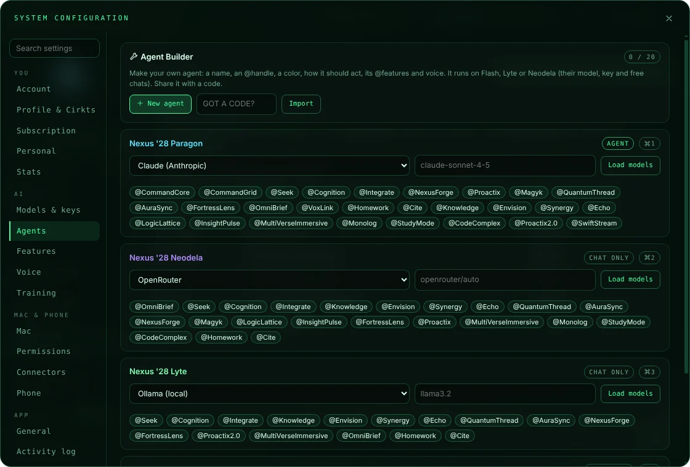
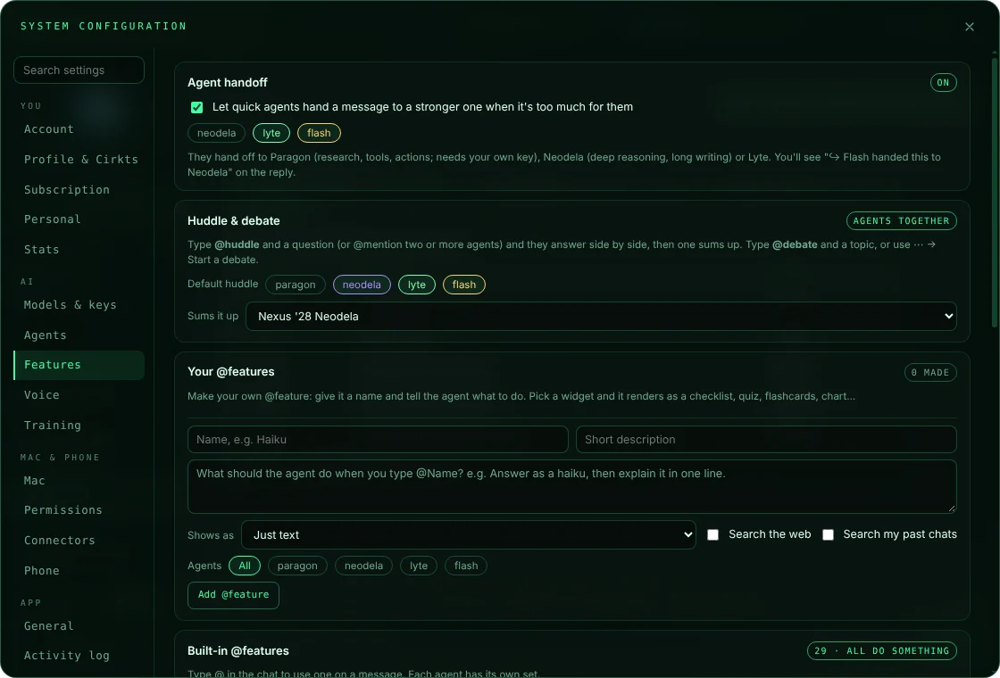
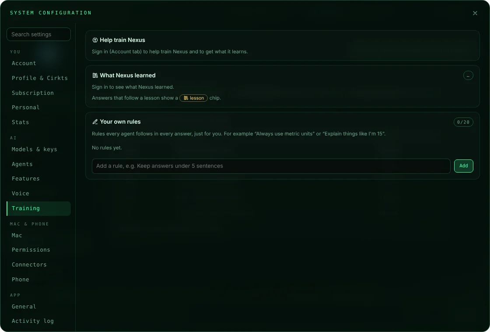
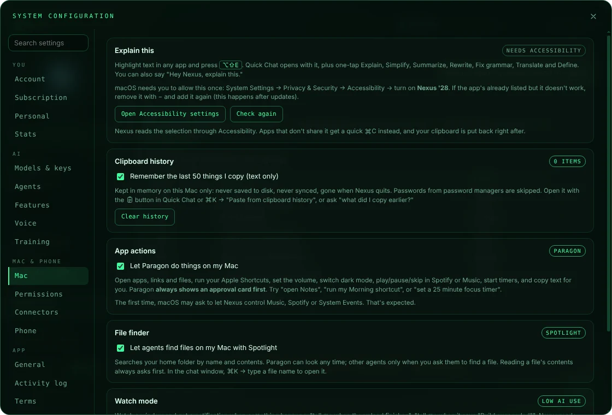
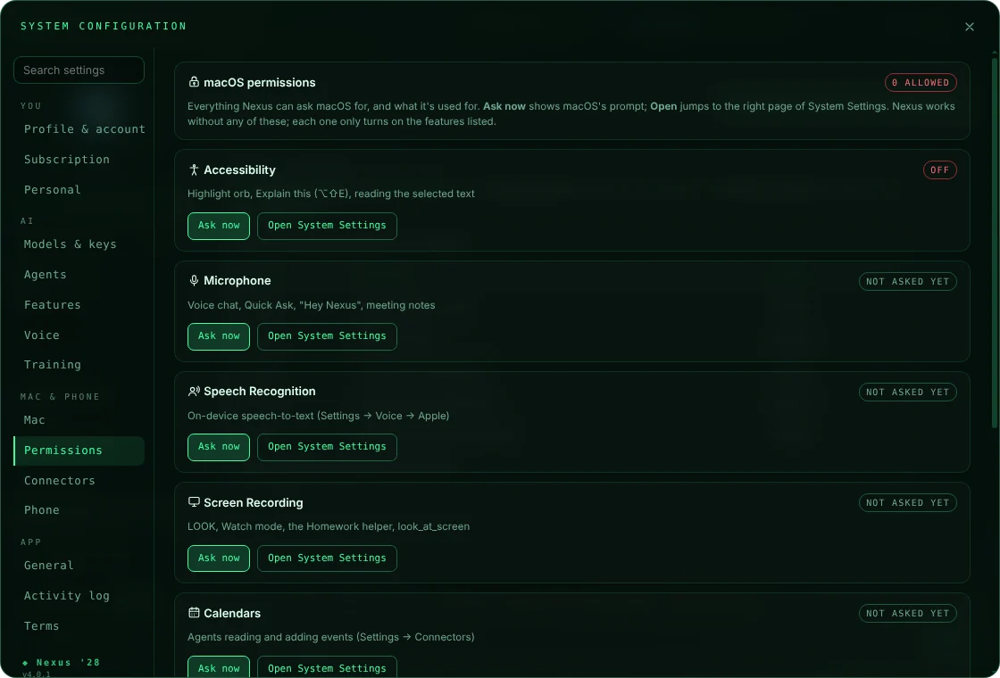
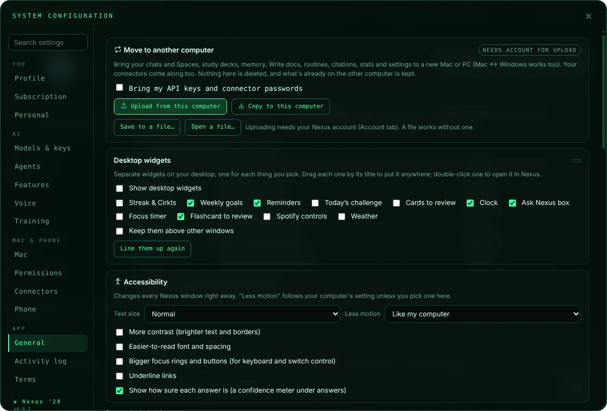
Accessibility
Settings → General → Accessibility changes every Nexus window at once:
- Text size: Smaller to Huge.
- Less motion: follows your computer's setting, or force it on or off. It stops the orb pulsing and other animations.
- More contrast: brighter text and borders.
- Easier-to-read font and more spacing.
- Bigger focus rings and buttons, for the keyboard and switch control.
- Underline links.
- Show how sure each answer is (the confidence meter).
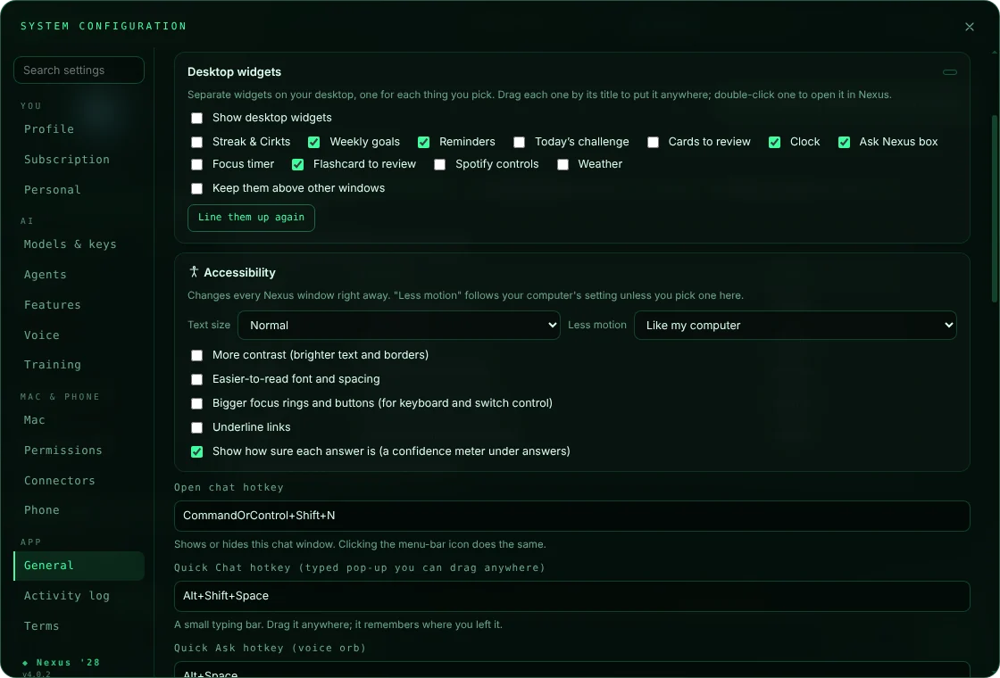
Also helpful: every answer can be read aloud (🔊), Hey Nexus and Quick Ask work without the keyboard, and the chat works with screen readers (new answers are announced).
Offline
- With no internet, Nexus switches to a model on your computer if you have one (Ollama, LM Studio, or Apple's on-device model on macOS 26), and switches back when you're online.
- Offline queue: if nothing on your computer can answer, your message is kept, and Nexus sends it by itself as soon as you're back online, with a notification when the answer arrives. Turn this off in Settings → Models & keys → When you're offline.
Account, plans and points
- Plans (Pro and Max) are bought on the aARgon3 site. Redeem your order in Settings → Subscription. Pro gives 10 Paragon tasks a day on the Nexus key, Max 25 (one message is one task, however many steps it takes).
- Plan owners can add people by username or email; they accept in their own Settings → Subscription.
- Points come from chatting, challenges, focus sessions and studying. They unlock orb skins and achievements, and sync between your computers.
- Wrapped (Settings → Stats) is a look back at how you've used Nexus.
Privacy
- Your chats are kept on your computer. They go to your account only if you turn on chat sync or use N28C.
- Your API keys stay on your computer.
- Nexus only looks at your screen when you ask (Look, Ask about my screen, Watch, Watch & guide me).
- Memory is only what you told it to remember. Incognito chats are never saved.
- Sharing chats for training is off unless you turn it on, and personal details are removed.
- The full details are in the Terms.
When something goes wrong
First check the status page: it shows whether something is down, and a Known issues & bugs list with workarounds. When you report a problem from the app, Nexus tells you if it's already a known issue, and you can ask to be told when it's fixed.
| Problem | Try this |
|---|---|
| Mac says the app "is damaged" or "can't be opened" | See Install on a Mac, step 3. |
| "Hey Nexus" doesn't hear me | Check the confidence meter in Settings → Voice. Make sure the microphone permission is on (Settings → Permissions). On Windows, Settings → Voice shows what it last heard and has Copy diagnostics to send to the Apoji Team. |
| An agent says I've run out | Switch to Flash (unlimited), add your own key, or redeem a plan. |
| Paragon says the Nexus key isn't set up right | That's on the Apoji Team's side. Use your own key in Settings → Models & keys for now, and check the status page. |
| The update doesn't install (Windows) | Settings → General → Updates → download it yourself and run the installer. |
| Screen features say they need permission (Mac) | Settings → Permissions → Screen Recording → Fix, then quit and reopen Nexus. |
| N28C says your computer is offline | Open Nexus on your computer and make sure you're signed in to the same account. Laptops: turn on Keep awake. |
Report a problem: ? → Report a problem (or Settings → General → Feedback). Add a screenshot if you can. Replies from the Apoji Team show up as notifications.
Keyboard shortcuts
| Keys (Mac) | Keys (Windows) | What it does |
|---|---|---|
| ⌘⇧N | CtrlShiftN | Show or hide Nexus |
| ⌥Space | AltSpace | Quick Ask (voice) |
| ⌥⇧Space | AltShiftSpace | Quick Chat |
| ⌥⇧S | AltShiftS | Ask about my screen |
| ⌥⇧E | AltShiftE | Explain the highlighted text |
| ⌘N | CtrlN | New chat |
| ⌘F | CtrlF | Find in this chat |
| ⌘K | CtrlK | Search everything |
| ⌘D | CtrlD | Dictate |
| ⌘B | CtrlB | OmniBrief on or off |
| ⌘, | Ctrl, | Settings |
| Esc | Esc | Stop an answer, close a pop-up, or hide Nexus |
Change the global ones in Settings → General.
Nexus '28 · Apoji Delegraphics · What's new · Report a bug on GitHub